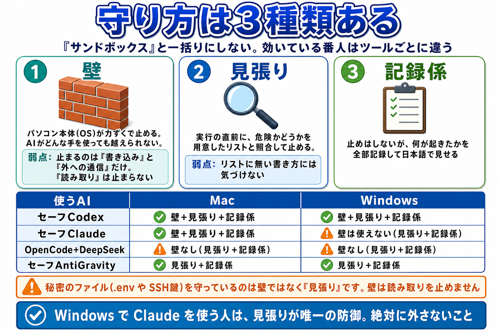
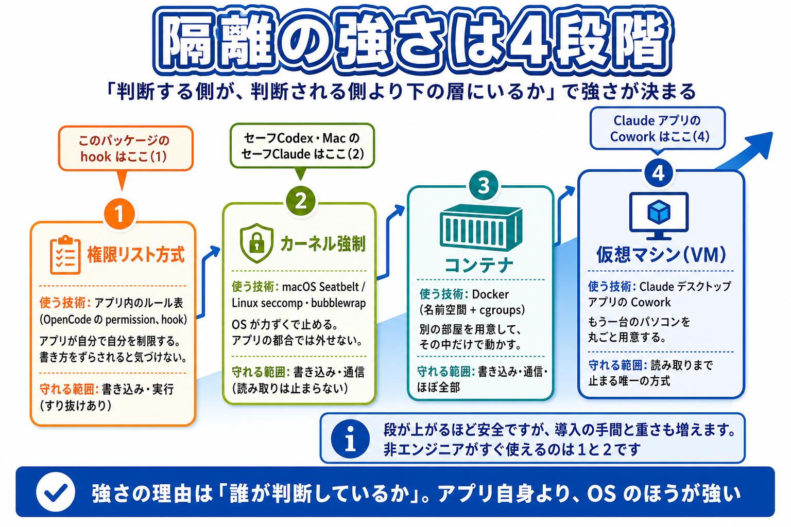
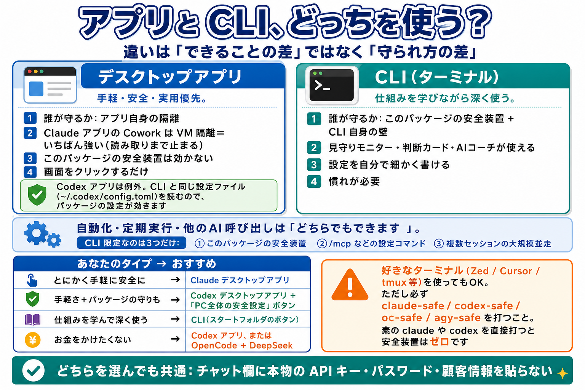

スタートフォルダを、上から順に押すだけ。
このページは、安全パッケージが「何を守り、どう使うのか」を 1 枚にまとめた案内です。むずかしい知識はいりません。
これは何？ AI 用の「作業部屋」と「番人」です
AI エージェントは、チャットで答えるだけでなく、あなたのパソコンでファイルを読み書きしたり、コマンドを実行したりします。便利ですが、間違えると危険です。このパッケージは、その危険を仕組みで止めます。
- 作業部屋を決める — AI が触ってよいのは作業フォルダ（my-ai-workspace）の中だけ。家全体ではなく、机の上だけを触らせるイメージです。
- 番人を置く — 危ない操作（ファイルの全削除・秘密の読み取り・怪しい送信など）を、実行される前に止めます。
- ぜんぶ記録する — AI が何をしたかを日本語の画面（見守りモニター）で確認できます。
この安全装置ぜんたいの呼び名が「Bouncer（用心棒）」です。特定のファイルや画面 1 つの名前ではなく、止める・見せる・伏せるの仕組みをまとめた総称です。起動はいつも「スタート」フォルダのボタンからです。ボタンを使わずに素の claude や codex を打つと、保護がそろわないことがあります。
守り方は 3 種類。「サンドボックス」と一括りにしません
このパッケージは、守り方を 3 つの言葉で正直に区別します。どれか 1 つで全部を守るのではなく、効くものを重ねます。
その 1
壁（OS が力ずくで止める）
パソコン本体（OS）が、作業フォルダの外への書き込みや危ない通信を強制的に止めます。AI がどんな手を使っても越えられません。
弱点：止まるのは「書き込み」と「通信」だけ。「読み取り」は止まりません。
その 2
見張り（リストと照合して止める）
実行の直前に、その操作が危険かどうかを用意したリストと照合して止めます。秘密のファイル（.env や SSH 鍵）を守っているのは、壁ではなくこの見張りです。
弱点：リストに無い書き方をされると気づけません。
その 3
記録係（見守りモニター）
止めはしませんが、何が起きたかを全部記録して、日本語の画面で見せます。困ったときは AI コーチに日本語で質問もできます。
弱点：記録するだけなので、単独では事故を防げません。

いちばん大事な 1 行：秘密のファイル（.env や SSH 鍵）を守っているのは壁ではなく「見張り」です。作業フォルダの中の .ai-safety フォルダが見張りの本体なので、絶対に消さないでください。

サブフォルダ「キーと金庫」：鍵と秘密はここにまとまっています
スタートフォルダの中に「キーと金庫」というサブフォルダがあります。API キー（サービスを使うための合鍵）の登録・削除と、秘密の文字列を安全にしまう「金庫」のボタンが、ここに全部まとまっています。
| 番号 | ボタン | 何をするか |
|---|---|---|
| 1・2 | DeepSeekキーを登録／削除 | OpenCode + DeepSeek や d-claude を使う人の合鍵です。登録は初回の 1 回だけです。 |
| 3・4 | AIコーチのキーを登録／削除 | 見守りモニターの AI コーチ（日本語で相談できる機能）用です。Google AI Studio の無料キーを 1 回貼るだけで使えます。登録しないとコーチは答えません。 |
| 5・6 | Bufferのキーを登録／削除 | SNS 予約投稿サービス Buffer を使う人だけ登録します。 |
| 7〜9 | 金庫に秘密をしまう／取り出す／消す | 合言葉やトークンなどの短い文字列を、パソコンの金庫（Mac のキーチェーン／Windows の DPAPI）に暗号化して保管します。取り出すときは画面に出さず、クリップボードに入れて 60 秒後に自動で消します。 |
| 10・11 | コピーした文章から秘密を伏せる／元に戻す | 外部の AI に文章を渡す前に、コピーした文章の中の API キーらしき文字列を自動で伏せ字にします。 |
| 12・13 | PC全体に安全設定を入れる／解除 | 1 回押しておくと、どのフォルダから AI を起動しても危険コマンドの禁止と記録が効くようになります。うっかり素で起動したときの保険です。Codex のデスクトップアプリにも効きます。 |
API キーは「あなた名義の合鍵」です。チャット欄に貼らない、人に見せない、平文のメモに書かない。しまい方の正解は docs の「13_秘密の入れ物-APIキーの安全な持ち方」にあります。
Mac と Windows では、守られ方が少し違います
同じボタンでも、OS によって「壁」が使えるかどうかが変わります。だから手順書も OS 別に分かれています。
- Codex … Mac でも Windows でも「壁＋見張り＋記録係」の全部が効きます。
- Claude Code … Mac では壁が効きますが、Windows では壁が使えません（Claude Code 自体が未対応のため）。Windows の Claude を守っているのは見張りと記録係です。
- OpenCode／AntiGravity … 壁はありません。見張りと記録係で守ります。

守れないことも、正直に書きます
ここを曖昧にすると事故になります。このパッケージの守備範囲の外は、次のとおりです。
| 場面 | 効くか | 理由 |
|---|---|---|
| ボタンから起動した AI が危険コマンドを実行しようとする | 効く | 見張り・承認・壁で止める対象です。 |
| AI が作業フォルダの外へファイルを書こうとする | 効く（壁がある組み合わせ） | OS の壁が強制的に止めます。 |
| ブラウザ版 ChatGPT・Claude.ai に自分で秘密を貼る | 効かない | このパッケージを通らず、ブラウザから直接送信されます。 |
| 画面を直接操作する AI（Computer Use など） | 基本対象外 | このパッケージの見張りを通らないため、OS の権限設定が中心になります。 |
| 書き方をずらした危険コマンド | 止まらないことがある | 見張りは文字の並びで照合するため、難読化には気づけないことがあります。モニターは「確認が必要」と表示します。 |
全体の一覧は docs の「90_守れる-守れない」に、アプリと CLI の違いは「20_卒業後ガイド」にまとまっています。

あなたが守る約束は、3 つだけ
- 1. 本物の秘密情報（API キー・パスワード・顧客情報）をチャット欄に貼らない。貼りそうな文章は「キーと金庫」の 10（秘密を伏せる）を通してから。
- 2. AI はスタートフォルダのボタンから起動する。作業は my-ai-workspace の中で。案件ごとに分けたいときは、その中にサブフォルダを作れば守りはそのまま効きます。
- 3. 警告や承認画面が出たら、意味が分からないまま「はい」を押さない。見守りモニターの判断カードと AI コーチが、日本語で判断を手伝います。
この 3 つさえ守れば、あとは仕組みが守ります。安心して AI を使い倒してください。